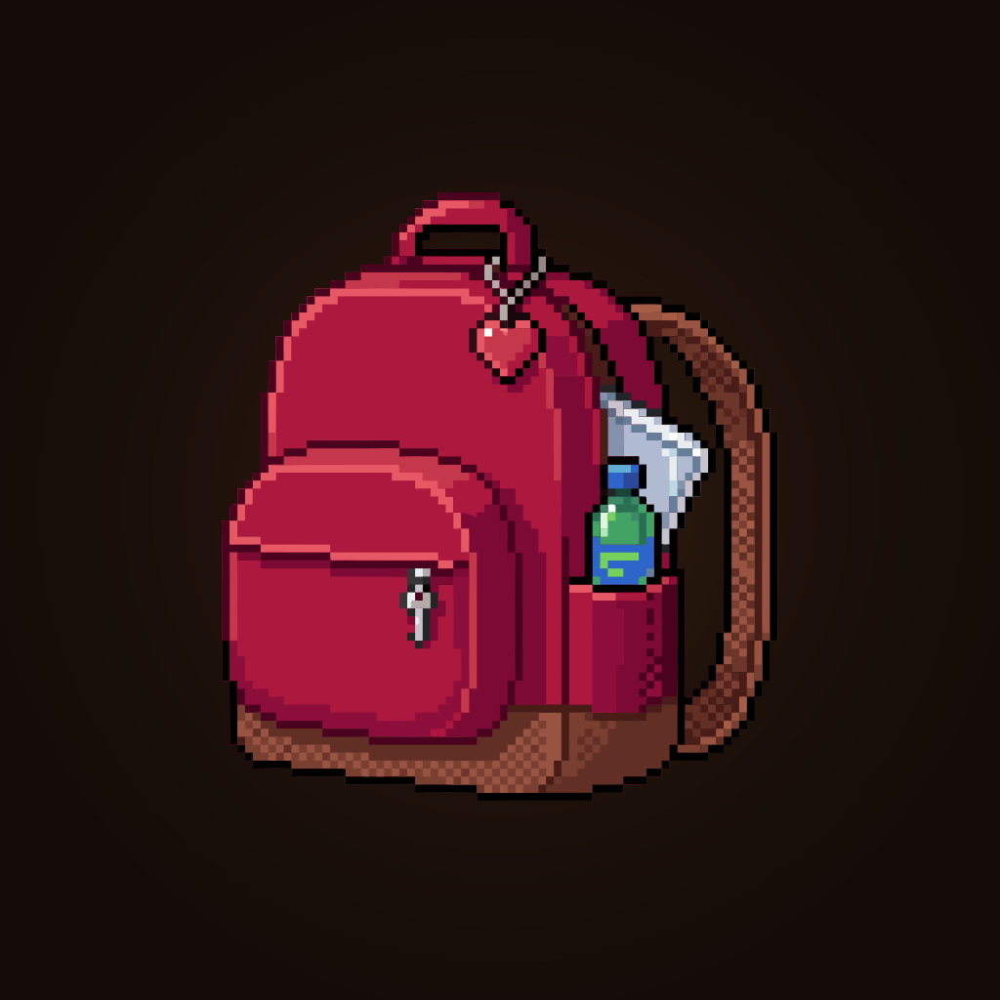
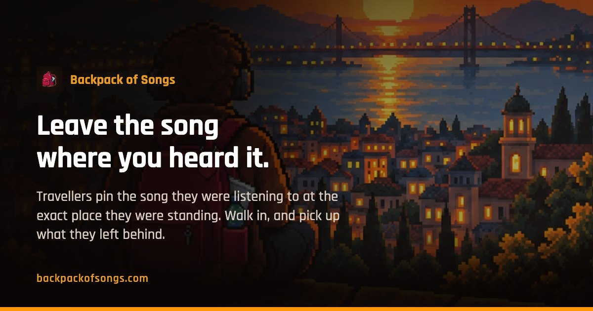

Press kit
Everything you need to write about Backpack of Songs, without having to ask.
Backpack of Songs is an app where travellers leave the song they were listening to at the exact place they were standing, for whoever walks past next.
Status
Not released yet. There are no store listings, so there is nothing to link to and no build to install. This page exists so that the description and the artwork are ready when there is. Follow @bpofsongs to know when that happens.
The facts
- What it is
- A map of songs people left where they heard them
- Platforms
- iOS and Android, built in Flutter
- Price
- Free. No ads, no subscription, no paid features, no in-app purchases
- Made by
- Leonardo Rodrigues Muller — solo developer and designer, Brazil
- Website
- backpackofsongs.com
- @bpofsongs
Description, ready to copy
Travellers leave the song they were listening to at the exact place they were standing, for whoever walks past next.
Backpack of Songs turns walking around into the interface. You leave the song you are listening to at the exact spot you are standing; anyone who passes within 1.6 km later finds it, on the ring closest to how far away it really is and pointing the way they would have to walk. There is no feed, no follower count and no algorithm — the only thing the app keeps score of is the countries you have left a song in.
Places get stuck to songs. Not the songs you would choose — the one a street musician was playing on an ordinary night in Lisbon, the one on somebody's speaker during a beach volleyball game. Backpack of Songs is built around that: it lets you pin the song you are listening to at the exact place you are standing, and pick up the ones other people left where they were.
What arrives on your radar is everything within 1.6 km of you, each song placed by its true distance and true bearing, so finding one means walking to it. Songs are held back for about an hour before they appear, which means nobody can follow anyone in real time, and you can leave one without the server ever storing your name. Keep the ones you like and they go into your backpack, along with the place and the person you got them from.
It is made by one person, as a designer and developer, with no business plan behind it — free, with nothing to unlock and nothing to subscribe to.
Artwork
Free to use when writing about the app. Everything below is the real file that ships with the site — no mockups, no upscaling.

{kind=link}



{kind=link}
A note on the screenshots
The two phone screens above are captures from the app running on a device. The backpack screen shown on the landing page is a coded mock-up, not a capture, which is why it is not offered here.
Getting in touch
Through @bpofsongs on Instagram, which is the only channel that exists so far.